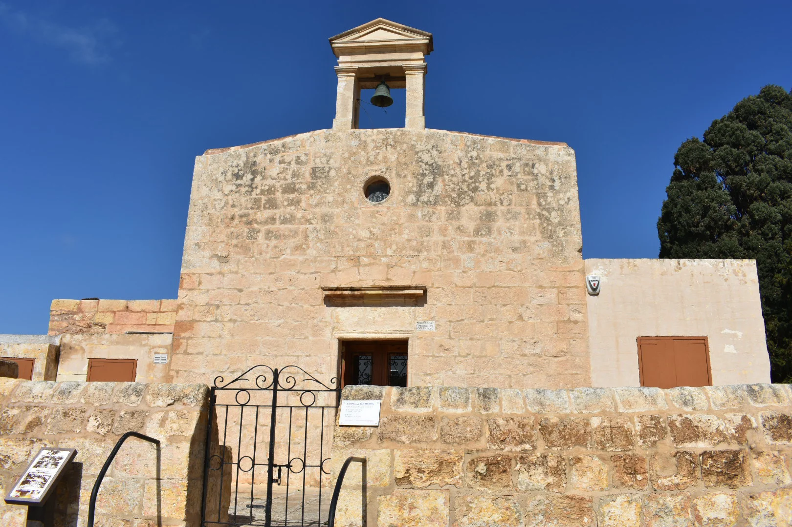

The everyday civic core. Confirm the actual entrance, pavement, traffic, parking and current works from the real address.

IL-BAĦRIJA · MALTAVillage stone.
Village stone.
Western land.
Baħrija's settled centre, protected valley and western coast belong to one wider landscape, but they are not interchangeable. Rabat and Mġarr remain separate service and route contexts.
READ THE LOCALITY IN PARTS
A rural village needs precise boundaries.
Government and council sources place Baħrija's community square within Rabat's administration. That relationship does not turn Baħrija into a Rabat duplicate or place every western landscape feature at a home's doorstep.
A specific protected watercourse and habitat—not a generic garden, public shortcut or guaranteed trail.
Part of the wider landscape. It is not evidence of a sea view, beach access or walk from a listing.
Useful orientation and service references. Each remains distinct from Baħrija's streets and daily rhythm.
LANDSCAPE, NOT PROPERTY PROOF
Protected ground changes how claims should be made.
ERA identifies Wied tal-Baħrija as a Tree Protection Area and conservation watercourse. Use it as careful landscape context, never as a promise of access, a marked hike or a feature of every home.
Check the last metres
Look at road width, steps, pavement continuity, deliveries and parking rather than extrapolating from a village centroid.
Recheck the works
Regeneration was announced in March 2026. Confirm the current stage and access; proposed features are not treated as complete.
Respect signed access
Protected habitat is not an invitation to cross private land. Use current signs and exact public endpoints.
No invented trail
A visible gap on a map is not a walking route. Surface, gradient and access need fresh route evidence.
EVERYDAY ORIENTATION
Useful anchors, with live details left live.
Health, council and bus sources provide durable starting points. Opening hours, construction, departures and property-specific access still require a current check.
Rabat Local Council
The council lists Baħrija Public Garden and is the official starting point for current local notices and works.
Rabat Health Centre
Primary HealthCare names Baħrija in the centre's catchment. Check live service and temporary-arrangement information.
Routes 109 and 109A
The operator currently names Baħrija on both route pages. That does not prove a nearest stop or journey time from a home.
St Martin Church
The Archdiocese lists Baħrija's St Martin pastoral zone. Service times remain operational data, not evergreen brochure copy.
FOOD, WITHOUT RANKINGS
A current register, not a recommendation list.
The MTA register is evidence of licensed records. It does not establish opening hours, menu, price, quality, booking availability or distance from a home.
New Life · North Country · St Martin's
The current MTA register places these restaurant records around Misraħ Patri Martin Caruana O.P. Recheck each operator before travelling.
Rogantino's · Ta' Richard · Tal-Gagin
The same register lists these in Baħrija or its named rural roads. They are presented without ranking or proximity claims.
Open the wider Baħrija context only when you need it.
The map frames the village with Rabat, Mġarr, Wied tal-Baħrija and the western coast for broad orientation. It deliberately draws no boundary, route, distance, travel time or listing location and loads from OpenStreetMap only after your click.
Government of Malta — Baħrija square project · Rabat Local Council — open spaces · Rabat Health Centre · route 109 · route 109A · ERA — protected trees and valleys · Archdiocese — Rabat parish zones · MTA Baħrija restaurant register. Volatile details require a fresh check.
No ranking, fixed opening hours, property-specific distance, guaranteed access, parking claim, accessibility promise or locality-wide journey time is implied.